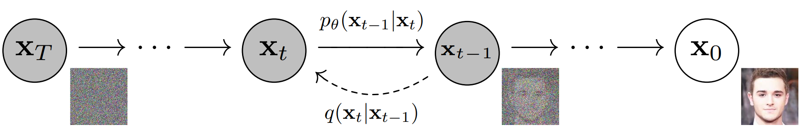
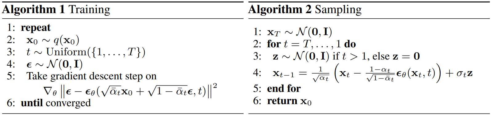

目前基于diffusion的生成模型已经逐渐从CV迁移到其他领域，并均展现出不错的效果。正好最近研究项目是生成式的任务，就想应该学习一下diffusion，说不定可以有不错的效果。打算分两篇文章对这个领域的基础知识进行记录，本篇先讲解最基础的diffusion model (Sohl-Dickstein et al., 2015)，再学习denoising diffusion probabilistic model (Ho et al. 2020, DDPM)及对其的优化 (Nichol & Dhariwal, 2021)。下一篇讲解抽象程度更高的denoising diffusion implicit model (Song et al., 2020, DDIM)和分析逆向过程最优方差的论文 (Bao et al., 2022, Analytic-DPM)。
一、Diffusion Model
1. 概述
Diffusion的思想是通过一个前向的扩散过程将复杂的真实数据分布转换为一个简单、易处理的分布（例如正态分布），之后通过有限步的逆过程还原真实数据的分布。如图1，真实数据\(\mathbf{x}_{0}\)经过总过\(T\)步加服从正态分布的噪音的过程得到\(\mathbf{x}_T\)，\(\mathbf{x}_T\)服从标准正态分布\(\mathcal{N}(\mathbf{0}, \mathbf{I})\)。而模型学习逆向的转移概率\(p_\theta(\mathbf{x}_{t-1}|\mathbf{x}_t)\)，从标准正态分布中采样的\(\mathbf{x}_T\)开始，逐步生成真实数据。训练目标则是生成的数据分布和真实数据分布尽可能相似。整个生成过程因为存在随机性，所以即使初始的\(\mathbf{x}_T\)是一样的，在采样的过程中分歧会越来越大，最后得到完全不一样的结果。

2. 前向过程
前向过程的目标是通过不断加噪音将复杂的真实数据分布转换为简单易处理的分布（例如标准正态分布）。其中加入噪音服从的分布种类决定了最后转换成的分布种类，这里以正态分布为例，原论文也讨论了二项分布的情形。给定从真实分布\(q(\mathbf{x}_0)\)中抽样出的数据点\(\mathbf{x}_0\)，我们在总共\(T\)步的迭代中逐步加入高斯噪音，每步高斯噪音的方差由序列\(\{\beta_t \in (0, 1)\}_{t=1}^T\)决定。显然每步加入噪音后的结果\(q(\mathbf{x}_t | \mathbf{x}_{t-1})\)都是服从正态分布的，我们令这些正态分布满足以下公式： \[ q(\pmb{x}_t | \pmb{x}_{t-1}) = \mathcal{N}(\sqrt{1-\beta_t}\pmb{x}_{t-1}, \beta_t \pmb{I}) \] 我们认为整个过程是Markov过程，即第\(t\)步的分布只与第\(t-1\)步的分布有关，则整个前向过程的概率为： \[ q(\pmb{x}_{1:T}|\pmb{x}_0) = \prod_{t=1}^T q(\pmb{x}_t | \pmb{x}_{t-1}) \] 事实上我们可以从\(\mathbf{x}_0\)推导出任意一步结果的分布\(q(\mathbf{x}_t|\mathbf{x}_0)\)，我们令\(\alpha_t = 1 - \beta_t\)，\(\bar{\alpha_t} = \prod_{i=1}^t \alpha_i\)，\(\mathbf{\epsilon} \sim \mathcal{N}(\mathbf{0}, \mathbf{I})\)则： \[ \begin{split} \pmb{x}_t &\sim \sqrt{\alpha_t} \pmb{x}_{t-1} + \sqrt{1 - \alpha_t} \pmb{\epsilon}\notag\\ &= \sqrt{\alpha_t\alpha_{t-1}} \pmb{x}_{t-2} + \sqrt{\alpha_t(1 - \alpha_{t-1})}\pmb{\epsilon} + \sqrt{1 - \alpha_t} \pmb{\epsilon}\notag\\ &= \sqrt{\alpha_t\alpha_{t-1}} \pmb{x}_{t-2} + \sqrt{1 - \alpha_t\alpha_{t-1}}\pmb{\epsilon}\\ &= ...\notag\\ &=\sqrt{\bar{\alpha}_t}\pmb{x}_0 + \sqrt{1-\bar{\alpha}_t}\pmb{\epsilon} \notag\\ &= \mathcal{N}(\sqrt{\bar{\alpha}_t}\pmb{x}_0, (1-\bar{\alpha}_t) \pmb{I}) \notag \end{split} \]
注意两个正态分布\(\mathcal{N}(\mathbf{0}, \sigma_1^2\mathbf{I})\)，\(\mathcal{N}(\mathbf{0}, \sigma_2^2\mathbf{I})\)之和为\(\mathcal{N}(\mathbf{0}, (\sigma_1^2+\sigma_2^2)\mathbf{I})\)
由于\(\beta_t \in (0, 1)\)，因此可以想象当前向加噪音的步骤\(T\rightarrow \infty\)时，\(\bar{\alpha}_T\rightarrow 0\)，所以\(\mathbf{x}_T\)的分布趋向于标准正态分布\(\mathcal{N}(\mathbf{0}, \mathbf{I})\)，这就相当于将复杂的真实数据分布通过加噪音转换为了简单易处理的分布。
需要注意的是方差序列\(\{\beta_t \in (0, 1)\}_{t=1}^T\)在Sohl-Dickstein et al., 2015文中是通过训练得到的，但Ho et al. 2020 (DDPM)提出直接使用预定义的常数效果更好。
3. 逆向过程
逆向过程的目标是通过学习逆向的Markov链的转移概率\(q(\mathbf{x}_{t-1}|\mathbf{x}_t)\)来将转换成的简单分布转换回真实的数据分布。\(q(\mathbf{x}_{t-1}|\mathbf{x}_t)\)是无法直接解的，因为需要遍历所有\(\mathbf{x}_{0:t}\)的可能路径才能知道给定\(\mathbf{x}_t\)时其上一步是\(\mathbf{x}_{t-1}\)的概率。但我们知道的是当\(\beta_t\)足够小时，\(q(\mathbf{x}_{t-1}|\mathbf{x}_t)\)也为正态分布。因此我们需要训练模型\(p_\theta(\mathbf{x}_{t-1}|\mathbf{x}_t)\)来拟合这个逆向的转移概率。 \[ p_\theta(\pmb{x}_{t-1}|\pmb{x}_t) = \mathcal{N}(\pmb{\mu}_\theta(\pmb{x}_t, t), \pmb{\Sigma}_\theta(\pmb{x}_t, t)) \] 而训练的目标是通过模型生成的数据分布\(p_\theta(\mathbf{x}_0)\)与真实数据分布\(q(\mathbf{x}_0)\)尽可能相近，即最小化这两个分布的交叉熵\(-\mathbb{E}_{q(\mathbf{x}_0)}(\log p_\theta(\mathbf{x}_0)) = - \int q(\mathbf{x}_0) \log p_\theta(\mathbf{x}_0) d\mathbf{x}_0\)（或者说最大化negative log-likelihood）。所以接下来的目标是推导这个损失函数的计算方式。首先我们可以得到模型预测下每种逆向diffusion路径（\(\mathbf{x}_{0:T}\)）的分布\(p_\theta(\mathbf{x}_{0:T})\)以及预测的数据分布\(p_\theta(\mathbf{x}_0)\)： \[ \begin{split} p_\theta(\pmb{x}_{0:T}) &= p_\theta(\pmb{x}_T) \prod_{t=1}^Tp_\theta(\pmb{x}_{t-1}|\pmb{x}_t)\\ p_\theta(\pmb{x}_0) &= \int p_\theta(\pmb{x}_{0:T})d\pmb{x}_{1:T} \end{split} \] 其中模型预测的数据分布\(p_\theta(\mathbf{x}_0)\)可以理解为通过所有可能的逆向路径得到\(\mathbf{x}_0\)的概率和（如果是离散变量就是\(p_\theta(\mathbf{x}_0) = \sum p_\theta(\mathbf{x}_{0:T})\)，更好理解一点）。由于原始的损失函数是难以计算的，我们可以用jensen不等式推导交叉熵的upper bound（类似VAE的优化思想，在VAE中目标函数是variational lower bound）： \[ \begin{split} \mathcal{L}_{ce} &= -\mathbb{E}_{q(\pmb{x}_0)}(\log p_\theta(\pmb{x}_0)) \notag\\ &= -\mathbb{E}_{q(\pmb{x}_0)}(\log \int p_\theta(\pmb{x}_{0:T})d\pmb{x}_{1:T}) \notag\\ &= -\mathbb{E}_{q(\pmb{x}_0)}(\log \int q(\pmb{x}_{1:T}|\pmb{x}_0) \frac{p_\theta(\pmb{x}_{0:T})}{q(\pmb{x}_{1:T}|\pmb{x}_0)} d\pmb{x}_{1:T}) \notag\\ &= -\mathbb{E}_{q(\pmb{x}_0)}(\log\mathbb{E}_{q(\pmb{x}_{1:T}|\pmb{x}_0)}(\frac{p_\theta(\pmb{x}_{0:T})}{q(\pmb{x}_{1:T}|\pmb{x}_0)})) \notag\\ &\leq -\mathbb{E}_{q(\pmb{x}_0)}(\mathbb{E}_{q(\pmb{x}_{1:T}|\pmb{x}_0)}(\log \frac{p_\theta(\pmb{x}_{0:T})}{q(\pmb{x}_{1:T}|\pmb{x}_0)}))\\ &= -\int \int q(\pmb{x}_0)q(\pmb{x}_{1:T}|\pmb{x}_0)\log\frac{p_\theta(\pmb{x}_{0:T})}{q(\pmb{x}_{1:T}|\pmb{x}_0)}d\pmb{x}_0 d\pmb{x}_{1:T}\notag\\ &= -\int q(\pmb{x}_{0:T})\log\frac{p_\theta(\pmb{x}_{0:T})}{q(\pmb{x}_{1:T}|\pmb{x}_0)}d\pmb{x}_{0:T}\notag\\ &=-\mathbb{E}_{q(\pmb{x}_{0:T})}[\log\frac{p_\theta(\pmb{x}_{0:T})}{q(\pmb{x}_{1:T}|\pmb{x}_0)}] = \mathbb{E}_{q(\pmb{x}_{0:T})}[\log\frac{q(\pmb{x}_{1:T}|\pmb{x}_0)}{p_\theta(\pmb{x}_{0:T})}]\notag \end{split} \]
值得注意的是如果将路径\(\pmb{x}_{1:T}\)看作是隐变量的话，这一形式取负后与variational lower bound的形式是一致的（\(\mathbb{E}_{Z\sim Q}[\log\frac{P(X,Z)}{Q(Z)}]\)），因此其实也可以通过variational lower bound的过程推出，这种思路可以参考这个博客，我们这里就不再推了。进一步地，这一upper bound又可以进一步拆成若干KL散度和熵的和： \[ \begin{split} &\mathcal{L}_{ce} \leq \mathbb{E}_{q(\pmb{x}_{0:T})}[\log\frac{q(\pmb{x}_{1:T}|\pmb{x}_0)}{p_\theta(\pmb{x}_{0:T})}] \\ &= \mathbb{E}_{q}[\log \frac{\prod_{t=1}^T q(\pmb{x}_t | \pmb{x}_{t-1})}{p(\pmb{x}_T) \prod_{t=1}^Tp_\theta(\pmb{x}_{t-1}|\pmb{x}_t)}] \\ &= \mathbb{E}_{q}[-\log p_\theta(\pmb{x}_T) + \log \frac{\prod_{t=1}^T q(\pmb{x}_t | \pmb{x}_{t-1})}{\prod_{t=1}^Tp_\theta(\pmb{x}_{t-1}|\pmb{x}_t)}] \\ &= \mathbb{E}_{q}[-\log p_\theta(\pmb{x}_T) + \sum_{t=2}^T \log \frac{q(\pmb{x}_t|\pmb{x}_{t-1})}{p_\theta(\pmb{x}_{t-1}| \pmb{x}_t)} + \log \frac{q(\pmb{x}_1|\pmb{x}_0)}{p_\theta(\pmb{x}_0| \pmb{x}_1)}] \\ &= \mathbb{E}_{q}[-\log p_\theta(\pmb{x}_T) + \sum_{t=2}^T \log \frac{q(\pmb{x}_t|\pmb{x}_{t-1}, \pmb{x}_0)}{p_\theta(\pmb{x}_{t-1}| \pmb{x}_t)} + \log \frac{q(\pmb{x}_1|\pmb{x}_0)}{p_\theta(\pmb{x}_0| \pmb{x}_1)}] (\text{Markov过程，独立于$\pmb{x}_0$})\\ &= \mathbb{E}_{q}[-\log p_\theta(\pmb{x}_T) + \sum_{t=2}^T \log (\frac{q(\pmb{x}_{t-1}|\pmb{x}_{t}, \pmb{x}_0)}{p_\theta(\pmb{x}_{t-1}| \pmb{x}_t)}\cdot\frac{q(\pmb{x}_t|\pmb{x}_0)}{q(\pmb{x}_{t-1}|\pmb{x}_0)}) + \log \frac{q(\pmb{x}_1|\pmb{x}_0)}{p_\theta(\pmb{x}_0| \pmb{x}_1)}](\text{Bayes公式})\\ &=\mathbb{E}_{q}[-\log p_\theta(\pmb{x}_T) + \sum_{t=2}^T \log \frac{q(\pmb{x}_{t-1}|\pmb{x}_{t}, \pmb{x}_0)}{p_\theta(\pmb{x}_{t-1}| \pmb{x}_t)}+ \sum_{t=2}^T\log\frac{q(\pmb{x}_t|\pmb{x}_0)}{q(\pmb{x}_{t-1}|\pmb{x}_0)} + \log \frac{q(\pmb{x}_1|\pmb{x}_0)}{p_\theta(\pmb{x}_0| \pmb{x}_1)}]\\ &=\mathbb{E}_{q}[-\log p_\theta(\pmb{x}_T) + \sum_{t=2}^T \log \frac{q(\pmb{x}_{t-1}|\pmb{x}_{t}, \pmb{x}_0)}{p_\theta(\pmb{x}_{t-1}| \pmb{x}_t)} + \log\frac{q(\pmb{x}_T|\pmb{x}_0)}{q(\pmb{x}_1|\pmb{x}_0)} + \log \frac{q(\pmb{x}_1|\pmb{x}_0)}{p_\theta(\pmb{x}_0| \pmb{x}_1)}]\\ &= \sum_{t=2}^T \mathbb{E}_q[\log \frac{q(\pmb{x}_{t-1}|\pmb{x}_{t}, \pmb{x}_0)}{p_\theta(\pmb{x}_{t-1}| \pmb{x}_t)}] - \mathbb{E}_q[\log p_\theta(\pmb{x}_T)] + \mathbb{E}_q[\log q(\pmb{x}_T|\pmb{x}_0)] - \mathbb{E}_q[\log p_\theta(\pmb{x}_0| \pmb{x}_1)] \end{split} \] 我们以\(H\)作为熵的记号，首先看与\(\mathbf{x}_T\)相关的两项，并将它们合并为\(\mathcal{L}_T\)： \[ \begin{split} \mathcal{L}_T &= - \mathbb{E}_q[\log p_\theta(\pmb{x}_T)] + \mathbb{E}_q[\log q(\pmb{x}_T|\pmb{x}_0)] \\ &= H_q(p_\theta(\pmb{x}_T)) - H_q(q(\pmb{x}_T|\pmb{x}_0))\notag \end{split} \] 由于\(q\)来源于预定义的方差序列，而\(\mathbf{x}_T\)是服从标准正态分布的噪音，因此此项为定值，不需要进行优化（如果想要训练得到方差序列，则此项不为0）。对于\(p_\theta(\mathbf{x}_0|\mathbf{x}_1)\)一项，Sohl-Dickstein et al., 2015文中表示，为了避免边缘效应，此项设置为前向概率的后验概率： \[ p_\theta(\pmb{x}_0|\pmb{x}_1) := q(\pmb{x}_0|\pmb{x}_1) = q(\pmb{x}_1|\pmb{x}_0)\frac{q(\pmb{x}_0)}{q(\pmb{x}_1)} \] 因此其期望项\(\mathcal{L}_0\)只与\(q\)的分布有关，为一常数（同样，如果需要训练得到方差序列，则此项不为常数）： \[ \mathcal{L}_0 = -\mathbb{E}_q(\log p_\theta(\pmb{x}_0|\pmb{x}_1)) = H_q(q(\pmb{x}_1|\pmb{x}_0)\frac{q(\pmb{x}_0)}{q(\pmb{x}_1)}) \] 而对于最前面的求和的部分，其中的每一项均可以转换为KL散度： \[ \begin{split} &\sum_{t=2}^T \mathbb{E}_q[\log \frac{q(\pmb{x}_{t-1}|\pmb{x}_{t}, \pmb{x}_0)}{p_\theta(\pmb{x}_{t-1}| \pmb{x}_t)}] \notag\\ &= \sum_{t=2}^T \int q(\pmb{x}_{0:T})\log \frac{q(\pmb{x}_{t-1}|\pmb{x}_{t}, \pmb{x}_0)}{p_\theta(\pmb{x}_{t-1}| \pmb{x}_t)}d\pmb{x}_{0:T} \notag\\ &= \sum_{t=2}^T \int q(\pmb{x}_0, \pmb{x}_t)D_{KL}(q(\pmb{x}_{t-1}|\pmb{x}_{t}, \pmb{x}_0)||p_\theta(\pmb{x}_{t-1}| \pmb{x}_t))d\pmb{x}_0d\pmb{x}_t \\ &= \sum_{t=2}^T\mathbb{E}_{q(\pmb{x}_0, \pmb{x}_t)}[D_{KL}(q(\pmb{x}_{t-1}|\pmb{x}_{t}, \pmb{x}_0)||p_\theta(\pmb{x}_{t-1}| \pmb{x}_t))] \notag\\ &= \sum_{t=2}^T \mathcal{L}_{t-1} \notag \end{split} \] 则最后我们的优化目标就变成\(\mathcal{L}_T + \sum_{t=1}^{T-1} \mathcal{L}_t + \mathcal{L}_0\)，且第一项和最后一项在方差序列提前确定的情况下均为常数，在需要训练得到方差序列时也可以较容易地计算，而中间的\(T-1\)项中，KL散度均为两个正态分布的KL散度，因此是可以有关于这两个正态分布的均值和方差的解析表达式的： \[ \begin{split} &q(\pmb{x}_{t-1}|\pmb{x}_{t}, \pmb{x}_0) \sim \mathcal{N}(\pmb{\mu}_1, \pmb{\Sigma}_1),\ p_\theta(\pmb{x}_{t-1}| \pmb{x}_t) \sim \mathcal{N}(\pmb{\mu}_2, \pmb{\Sigma}_2) \\ &D_{KL}(q(\pmb{x}_{t-1}|\pmb{x}_{t}, \pmb{x}_0)||p_\theta(\pmb{x}_{t-1}| \pmb{x}_t)) = \frac{1}{2}[(\pmb{\mu}_1 - \pmb{\mu}_2)^T \pmb{\Sigma}_2^{-1}(\pmb{\mu}_1 - \pmb{\mu}_2) - \log\det(\pmb{\Sigma}_2^{-1}\pmb{\Sigma}_1) + \text{Tr}(\pmb{\Sigma}_2^{-1}\pmb{\Sigma}_1) - n] \end{split} \] \(p_\theta(\mathbf{x}_{t-1}|\mathbf{x}_t)\)的均值和方差均为模型预测的结果，\(q(\mathbf{x}_{t-1}|\mathbf{x}_{t}, \mathbf{x}_0)\)的均值和方差是可以解析计算的（如果没有\(\mathbf{x}_0\)的条件分布\(q(\mathbf{x}_{t-1}|\mathbf{x}_t)\)则是无法计算的，这也是为什么要在前面的变形中引入\(\mathbf{x}_0\)的条件）。我们之前有推导过： \[ \begin{split} &q(\pmb{x}_t | \pmb{x}_{t-1}) = \mathcal{N}(\sqrt{\alpha_t}\pmb{x}_{t-1}, \beta_t \pmb{I})\\ &q(\pmb{x}_t|\pmb{x}_0)= \mathcal{N}(\sqrt{\bar{\alpha_T}}\pmb{x}_0, (1-\bar{\alpha_T}) \pmb{I}) \end{split} \] 所以借助正态分布的概率密度函数表达式，我们可以得到： \[ \begin{split} &q(\pmb{x}_{t-1}|\pmb{x}_t, \pmb{x}_0) \\ &= q(\pmb{x}_t|\pmb{x}_{t-1}, \pmb{x}_0)\frac{q(\pmb{x}_{t-1}|\pmb{x}_0)}{q(\pmb{x}_t|\pmb{x}_0)} = q(\pmb{x}_t|\pmb{x}_{t-1})\frac{q(\pmb{x}_{t-1}|\pmb{x}_0)}{q(\pmb{x}_t|\pmb{x}_0)}(\text{Markov chain性质}) \\ &= \sqrt{\frac{1}{(2\pi)^{n/2}(\frac{\beta_t(1-\bar{\alpha}_{t-1})}{1-\bar{\alpha}_t})^{n/2}}}\exp[-\frac{1}{2}(\frac{(\pmb{x}_t - \sqrt{\alpha_t}\pmb{x}_{t-1})^2}{\beta_t} + \frac{(\pmb{x}_{t-1} - \sqrt{\bar{\alpha}_{t-1}}\pmb{x}_0)^2}{1-\bar{\alpha}_{t-1}} - \frac{(\pmb{x}_{t} - \sqrt{\bar{\alpha}_{t}}\pmb{x}_0)^2}{1-\bar{\alpha}_t})]\\ &= \sqrt{\frac{1}{(2\pi)^{n/2}(\frac{\beta_t(1-\bar{\alpha}_{t-1})}{1-\bar{\alpha}_t})^{n/2}}}\exp[-\frac{1}{2}(\frac{(1-\bar{\alpha}_t)}{\beta_t(1-\bar{\alpha}_{t-1})}\pmb{x}_{t-1}^2 - 2(\frac{\sqrt{\alpha_t}}{\beta_t}\pmb{x}_t + \frac{\sqrt{\bar{\alpha}_{t-1}}}{1 - \bar{\alpha}_{t-1}}\pmb{x}_0)\pmb{x}_{t-1} + C(\pmb{x}_t, \pmb{x}_0))] \end{split} \] 其中\(C(\mathbf{x}_t, \mathbf{x}_0)\)是与\(\mathbf{x}_{t-1}\)无关的项，没有展开写，\(n\)为\(\pmb{x}\)的维数。通过以上推导可以看到\(q(\mathbf{x}_{t-1}|\mathbf{x}_t, \mathbf{x}_0) \sim \mathcal{N}(\tilde{\mathbf{\mu}}(\mathbf{x}_t, \mathbf{x}_0), \tilde{\beta}_t\mathbf{I})\)： \[ \begin{split} \tilde{\beta}_t &= \frac{\beta_t(1-\bar{\alpha}_{t-1})}{(1-\bar{\alpha}_t)}\\ \tilde{\pmb{\mu}}(\pmb{x}_t, \pmb{x}_0) &= (\frac{\sqrt{\alpha_t}}{\beta_t}\pmb{x}_t + \frac{\sqrt{\bar{\alpha}_{t-1}}}{1 - \bar{\alpha}_{t-1}}\pmb{x}_0) \cdot \frac{\beta_t(1-\bar{\alpha}_{t-1})}{(1-\bar{\alpha}_t)} \\ &= \frac{\sqrt{\alpha_t}(1 - \bar{\alpha}_{t-1})}{1 -\bar{\alpha}_t}\pmb{x}_t + \frac{\sqrt{\bar{\alpha}_{t-1}}\beta_t}{1-\bar{\alpha}_t}\pmb{x}_0 \end{split} \] 也就是说，给定\(\mathbf{x}_0\)和\(\mathbf{x}_t\)，我们就可以计算出\(q(\mathbf{x}_{t-1}|\mathbf{x}_t, \mathbf{x}_0)\)所服从的正态分布的均值和方差以及模型预测的\(p_\theta(\mathbf{x}_{t-1}|\mathbf{x}_t)\)的均值和方差，从而算出KL散度\(D_{KL}(q(\mathbf{x}_{t-1}|\mathbf{x}_{t}, \mathbf{x}_0)||p_\theta(\mathbf{x}_{t-1}| \mathbf{x}_t))\)，进而计算损失函数进行梯度下降。训练时\(\mathbf{x}_0\)与\(\mathbf{x}_t\)均通过抽样得到。
二、Denoising Diffusion Probabilistic Model (DDPM)
Ho et al. 2020 (DDPM)对最基础的diffusion model进行了简化和调整，简化了损失函数并提升了生成质量：
- 确定方差序列\(\{\beta_t \in (0, 1)\}_{t=1}^T\)作为超参，而不用训练得到
- 简化逆向分布，认为每维之间相互独立，并指定方差值：
- 原始diffusion model：\(p_\theta(\mathbf{x}_{t-1}|\mathbf{x}_t) = \mathcal{N}(\mathbf{\mu}_\theta(\mathbf{x}_t, t), \mathbf{\Sigma}_\theta(\mathbf{x}_t, t))\)
- DDPM：\(p_\theta(\mathbf{x}_{t-1}|\mathbf{x}_t) = \mathcal{N}(\mathbf{\mu}_\theta(\mathbf{x}_t, t), \sigma_t^2\mathbf{I})\)，实验中验证了\(\sigma_t\)的两种取法（\(\sigma_t^2 = \tilde{\beta}_t=\frac{\beta_t(1-\bar{\alpha}_{t-1})}{(1-\bar{\alpha}_t)}\) / \(\sigma_t^2 = \beta_t\)），结果相近。
- 更好的\(\mathbf{\mu}_\theta(\mathbf{x}_t, t)\)参数化方法
- 对于\(p_\theta(\mathbf{x}_0|\mathbf{x}_1)\)，使用单独的decoder进行预测\(p_{\theta'}(\mathbf{x}_{0}|\mathbf{x}_1) = \mathcal{N}(\mathbf{\mu}_{\theta'}(\mathbf{x}_1, 1), \sigma_1^2\mathbf{I})\)，不是简单使用\(q\)的后验概率
接下来详细解释这些简化带来的好处。
1. 目标函数简化
首先因为\(\{\beta_t \in (0, 1)\}_{t=1}^T\)提前确定了，因此\(\mathcal{L}_T\)与\(\mathcal{L}_0\)都为常数，不需考虑，而由于对逆向的分布的协方差进行了简化，认为每维之间相互独立了，所以\(\mathcal{L}_{t-1|t\in[2, T]}\)中所涉及的KL散度也可以继续简化： \[ \begin{split} &q(\pmb{x}_{t-1}|\pmb{x}_{t}, \pmb{x}_0) \sim \mathcal{N}(\tilde{\pmb{\mu}}(\pmb{x}_t, \pmb{x}_0), \tilde{\beta}_t\pmb{I}),\ p_\theta(\pmb{x}_{t-1}| \pmb{x}_t) \sim \mathcal{N}(\pmb{\mu}_\theta(\pmb{x}_t, t), \sigma_t^2\pmb{I}) \\ &D_{KL}(q(\pmb{x}_{t-1}|\pmb{x}_{t}, \pmb{x}_0)||p_\theta(\pmb{x}_{t-1}| \pmb{x}_t)) = \frac{1}{2}[\frac{||\tilde{\pmb{\mu}}(\pmb{x}_t, \pmb{x}_0) - \pmb{\mu}_\theta(\pmb{x}_t, t)||^2}{\sigma_t^2} - \log\det(\frac{\tilde{\beta}_t}{\sigma_t^2}\pmb{I}) + \text{Tr}(\frac{\tilde{\beta}_t}{\sigma_t^2}\pmb{I}) - n] \end{split} \] 由于\(\tilde{\beta}_t\)与\(\sigma_t^2\)均为超参生成的常数，因此显然KL散度中只有均值差的平方一项是可变的，即\(t\in[2, T]\)时\(\mathcal{L}_{t-1}\)变为： \[ \begin{split} \mathcal{L}_{t-1} &= \mathbb{E}_{q(\pmb{x}_0, \pmb{x}_t)}[D_{KL}(q(\pmb{x}_{t-1}|\pmb{x}_{t}, \pmb{x}_0)||p_\theta(\pmb{x}_{t-1}| \pmb{x}_t))] \\ &= \mathbb{E}_{q(\pmb{x}_0, \pmb{x}_t)}[\frac{1}{2\sigma_t^2}||\tilde{\pmb{\mu}}(\pmb{x}_t, \pmb{x}_0) - \pmb{\mu}_\theta(\pmb{x}_t, t)||^2] + C \end{split} \] 其中\(C\)为常数，可以舍去，我们令\(\mathcal{L}_{t-1}' = \mathcal{L}_{t-1} - C\)，则去掉所有常数项后新的目标函数\(\mathcal{L}\)为： \[ \mathcal{L} = \sum_{t=2}^T \mathcal{L}_{t-1}' = \sum_{t=2}^T \mathbb{E}_{q(\pmb{x}_0, \pmb{x}_t)}[\frac{1}{2\sigma_t^2}||\tilde{\pmb{\mu}}(\pmb{x}_t, \pmb{x}_0) - \pmb{\mu}_\theta(\pmb{x}_t, t)||^2] \] 这就比之前完整的KL散度的形式简洁明了多了。
2. 新的参数化方法
从上面的目标函数可以看出，最基本的参数化方法是设计模型以\(\mathbf{x}_t\)和\(t\)为输入，拟合\(\tilde{\mathbf{\mu}}(\mathbf{x}_t, \mathbf{x}_0)\)的值，但之前我们有推导过，\(\mathbf{x}_t\)可以写成\(\mathbf{x}_0\)与高斯噪音\(\mathbf{\epsilon}\)的加和形式：\(\mathbf{x}_t(\mathbf{x}_0, \mathbf{\epsilon})= \sqrt{\bar{\alpha}_t}\mathbf{x}_0 + \sqrt{1-\bar{\alpha}_t}\mathbf{\epsilon}, \mathbf{\epsilon}\sim\mathcal{N}(\mathbf{0}, \mathbf{I})\)，因此我们可以进一步推导\(\mathbf{\mu}_\theta(\mathbf{x}_t, t)\)需要拟合的函数形式： \[ \pmb{\mu}_\theta(\pmb{x}_t, t) = \tilde{\pmb{\mu}}(\pmb{x}_t, \frac{1}{\sqrt{\bar{\alpha}_t}}(\pmb{x}_t - \sqrt{1-\bar{\alpha}_t}\pmb{\epsilon}_\theta(\pmb{x}_t, t))) = \frac{1}{\sqrt{\alpha_t}}(\pmb{x}_t - \frac{\beta_t}{\sqrt{1 - \bar{\alpha}_t}}\pmb{\epsilon}_\theta(\pmb{x}_t, t)) \] 其中\(\mathbf{\epsilon}_\theta(\mathbf{x}_t, t)\)即模型，以\(\mathbf{x}_t\)和\(t\)为输入，输出得到\(\mathbf{x}_t\)的高斯噪音。此时从\(p_\theta(\mathbf{x}_{t-1}|\mathbf{x}_t)\)中采样\(\mathbf{x}_{t-1}\)只需计算\(\mathbf{x}_{t-1} = \frac{1}{\sqrt{\alpha_t}}(\mathbf{x}_t - \frac{\beta_t}{\sqrt{1 - \bar{\alpha}_t}}\mathbf{\epsilon}_\theta(\mathbf{x}_t, t)) + \sigma_t \mathbf{z}, \mathbf{z}\sim\mathcal{N}(\mathbf{0}, \mathbf{I})\)，这个过程中的\(\mathbf{\epsilon}_\theta\)就非常像Langevin dynamics中的下降梯度了。
Langevin dynamics是分子动力学中的概念，从概率分布\(p(\mathbf{x})\)中经过梯度下降获得稳定的系统状态，更新的方式为\(\mathbf{x}_t = \mathbf{x}_{t-1} + \frac{\epsilon}{2}\nabla_x\log p(\mathbf{x}_{t-1}) + \sqrt{\epsilon} \mathbf{z}_t, \mathbf{z}_t \sim \mathcal{N}(\mathbf{0}, \mathbf{I})\)，但是这个过程中的\(\mathbf{z}_t\)是用来缓解陷入局部最优的问题的
如果我们可以进一步将此公式代入\(\mathcal{L}_{t-1}'\)可以得到非常像denoising score matching的损失函数： \[ \begin{split} \mathcal{L}_{t-1}' &= \mathbb{E}_{q(\pmb{x}_0, \pmb{x}_t)}[\frac{1}{2\sigma_t^2}||\tilde{\pmb{\mu}}(\pmb{x}_t, \pmb{x}_0) - \pmb{\mu}_\theta(\pmb{x}_t, t)||^2] \\ &= \mathbb{E}_{q(\pmb{x}_0), \pmb{\epsilon}}[\frac{1}{2\sigma_t^2}||\tilde{\pmb{\mu}}(\pmb{x}_t, \frac{1}{\sqrt{\bar{\alpha}_t}}(\pmb{x}_t - \sqrt{1-\bar{\alpha}_t}\pmb{\epsilon}_\theta(\pmb{x}_t, t))) - \pmb{\mu}_\theta(\pmb{x}_t, t)||^2] \\ &= \mathbb{E}_{q(\pmb{x}_0), \pmb{\epsilon}}[\frac{\beta_t^2}{2\sigma_t^2\alpha_t(1-\bar{\alpha}_t)}||\pmb{\epsilon} - \pmb{\epsilon}_\theta({\bar{\alpha}_t}\pmb{x}_0 + \sqrt{1-\bar{\alpha}_t}\pmb{\epsilon}, t)||^2] \end{split} \]
score matching的生成模型模拟Langevin dynamics的过程，而每步下降梯度是由神经网络进行预测
根据以上推导，我们可以直接让网络预测\(\tilde{\mathbf{\mu}}(\mathbf{x}_t, \mathbf{x}_0)\)，也可以预测噪音\(\mathbf{\epsilon}\)。虽然两者在数学上是等价的，但实际实验中通常使用后者训练出的网络效果更好。除此之外，原本的训练目标需要遍历所有\(t \in [2, T]\)，Ho et al. 2020 (DDPM)发现如果将\(t\)也改成抽样，并去除权重\(\frac{\beta_t^2}{2\sigma_t^2\alpha_t(1-\bar{\alpha}_t)}\)，训练效果会更好，即新的训练目标简化为： \[ \mathcal{L}_{\text{simple}} = \mathbb{E}_{t, q(\pmb{x}_0), \pmb{\epsilon}}[||\pmb{\epsilon} - \pmb{\epsilon}_\theta({\bar{\alpha}_t}\pmb{x}_0 + \sqrt{1-\bar{\alpha}_t}\pmb{\epsilon}, t)||^2], t\sim \mathcal{U}(1, T), \pmb{\epsilon}\sim\mathcal{N}(\pmb{0}, \pmb{I}) \] 其训练和采样生成的过程也变得非常简洁，如下面的伪代码：

值得一提的是去除权重这一行为使得不同步的\(\pmb{\epsilon}_\theta(\cdot, t)\)是平等的，这也是score matching网络的做法。虽然从数学推导上来看会使目标函数的最终效果偏离令\(q(\pmb{x}_0) = p_\theta(\pmb{x}_0)\)，但从优化的角度来看这么做是合理的。因为不同步\(t\)实际使用的是不同的参数，相互之间没有依赖关系，而它们对应目标函数中的项相互之间只是加权求和的关系，所以令整体最小和使每一项分别最小最后的效果是一样的。
3. \(\beta_t\)的选取
DDPM原文中选取从\(\beta_1=10^{-4}\)线性增长到\(\beta_T=0.02\)。\(\beta_t\)的选取需要是相对于数据的分布是较小的，这样才能保证前向和逆向的过程的分布是类似的形式（图像生成数据归一化到\([-1, 1]\)）。
三、Improved DDPM
Nichol & Dhariwal (Improved DDPM， 2021) 的文中提出了若干对DDPM模型的优化方法。
首先是提出基于cosine进行\(\beta_t\)的变化： \[ \beta_t = \text{clip}(1 - \frac{\bar{\alpha}_t}{\bar{\alpha}_{t-1}}, 0.999), \bar{\alpha}_t = \frac{f(t)}{f(0)}, f(t) = \cos (\frac{t/T+s}{1 + s}\cdot \frac{\pi}{2})^2 \] 其中\(s\)是较小的偏置，防止在\(t=0\)时\(\beta_t\)过于小。其次，Nichol & Dhariwal (Improved DDPM， 2021) 也提出用模型预测的向量\(\pmb{v}\)对\(\beta_t\)和\(\tilde{\beta}_t\)进行混合来作为逆向过程的方差： \[ \pmb{\Sigma}_\theta(\pmb{x}_t, t) = \exp(\pmb{v}\log \beta_t + (1 - \pmb{v})\log\tilde{\beta}_t) \] 因为\(\mathcal{L}_{\text{simple}}\)是与\(\pmb{\Sigma}_\theta\)无关的，他们选择将原始的训练目标和DDPM中简化的训练目标进行加权作为新的训练目标： \[ \mathcal{L}_\text{hybrid} = \mathcal{L}_\text{simple} + \lambda \mathcal{L} \] 除此之外他们提出通过strided sampling的方式加速生成采样，具体而言，每隔\(\lceil T/S \rceil\)步进行一次更新，这样将总共\(T\)步的采样变为\(S\)步，每步的方差可以如下计算： \[ \beta_{S_t} = 1 - \frac{\bar{\alpha}_{S_t}}{\bar{\alpha}_{S_{t-1}}}, \tilde{\beta}_{S_t} =\frac{1-\bar{\alpha}_{S_{t-1}}}{1-\bar{\alpha}_{S_t}}\beta_{S_t} \]
后记
本篇到此就结束了，记录了基础的diffusion model以及由其简化而来的denoising diffusion probabilistic model (DDPM)。而DDPM文中也分析了其框架与Langevin dynamics以及score matching方法的相似之处。除此之外，也记录了Improved DDPM中提出的若干优化。整个过程涉及很多数学推导，需要慢慢看仔细思考才能理解，写完以后大脑cpu温度过高直接去打游戏了。下一篇将讲解抽象程度更高的denoising diffusion implicit model (Song et al., 2020, DDIM)和DDIM理论最优的\(\sigma\)取值(Bao et al., 2022, Analytic-DPM)。
参考文献
[1] What are diffusion models?
[2] Deep Unsupervised Learning using Nonequilibrium Thermodynamics (ICML 2015)